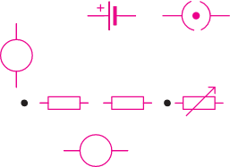
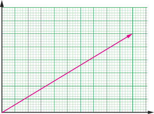
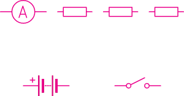

Revision Exercise 2
1. For each of the items (i) - (iv), choose the correct answer among the given alternatives and write its letter.
(a) The given circuit diagram in Figure 2.65 is for the experiment to determine the equivalent resistance of two resistors connected in series. The components X, Y and Z shown in the circuit respectively represent.

(i) Rheostat, resistor, ammeter
(ii) Voltmeter, ammeter, rheostat
(iii) Ammeter, voltmeter, rheostat
(iv) Rheostat, ammeter, voltmeter
(b) The electric current as a function of voltage across a resistor is presented by the graph in Figure 2.66. What is the resistance of the wire?

(i) 1Ω
(ii) 0.8 Ω
(iii) 1.7 Ω
(iv) 0.4 Ω
(v) 0.2 Ω
(c) What is the power dissipated in the resistor in revision exercise 1 (b) when the applied voltage is 5 V?
(i) 5 W
(ii) 10 W
(iii) 15 W
(iv) 20 W
(v) 25 W
(d) Three resistors: , , and are connected in series and to a 36 V battery as shown in Figure 2.67. What is the ammeter reading when the switch is closed?

(i) 6 A
(ii) 5 A
(iii) 4A
(iv) 2 A
2. A child, while inserting an electric plug into the socket, did not see that there was a thin piece of aluminium foil stuck between the pins of the plug. When he turned the switch on, he noticed a spark at the plug, and at the same time, the lights went out. What could have happened to cause the spark and to make the lights go out?